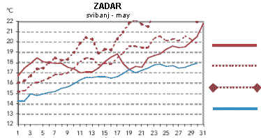

Climate conditions
This climatic zone shows typical Mediterranean characteristics, but there is also great impact of a warm sea in Pašman channel. Sea temperature perennial measurements show us that swimming season usually starts in may and it lasts until october.
Unfortunately, this fact is not so well known and people don't change their habits easily, so there is plenty of free capacities in preseason and postseason. But it's not only about capacities and available apartments, that way you can avoid crowd and get much better prices. Sea in Turanj is really pure and clear, due to rare bidirectional current and clean environment.
|  |
|
| | | | | |
| average daily temperature |
| |
| multiyear average + s |
| |
| multiyear average + 2s |
| | | multiyear average |
| | | |
Air temperatures get pretty high in summer, but there is a wind called maestral (mistral) coming from the sea and bringing fresh air that helps endure high temperatures. Of course, swimming and laying in the pine shadow helps too.
Summer climate is ideal for people that want to use up all the vacation for fun and swimming because the rain comes very rarely at summer, so you you practically can't pick a wrong date for your coming in Turanj. Once or twice a season there comes a summer storm with thunder bolts and it usually happens at night. When it comes, it electrificates night air so much that it changes the atmosphere, pleasing those who came to their vacation in couples (or found a match here).
|